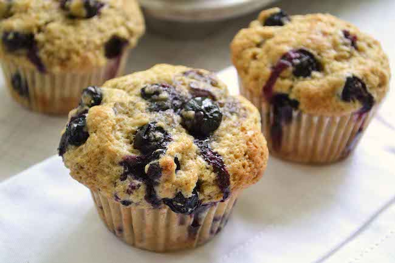

210 gram bloem
150 gram kristalsuiker
snuf zout
10 ml bakpoeder
83 ml olie (liefst zonnebloem olie of een andere olie zonder bijsmaak)
1 ei
83 ml melk
150 gram blueberry's

Verwarm de oven voor op 200°C. Zet de muffinvormpjes klaar, eventueel in een bakblik.
Roer de bloem, suiker, zout en bakpoeder door elkaar. Mix de olie, melk en ei in een aparte kom. Voeg dit bij het bloem-mengsel.
Roer even door elkaar, maar niet te lang. Roer de blueberries er ook doorheen. (niet teveel roeren)
Vul de muffinvormpjes voor ongeveer 3/4 met het muffinbeslag. (gaat uitstekend met een ijslepel!)
Bak de muffins ongeveer 25 minuten op 200°C.